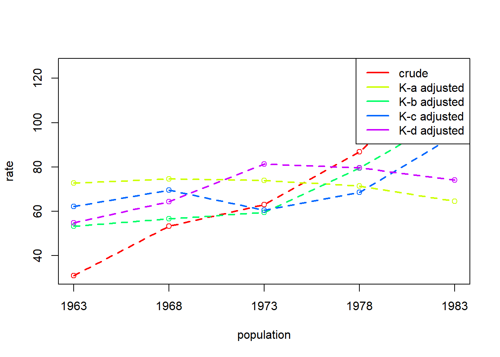
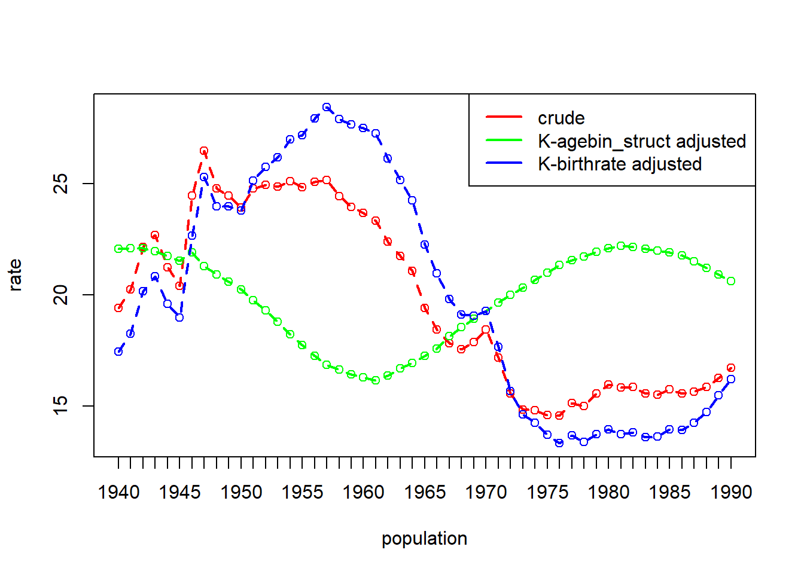

| year | offenders | reconvicted | crude_rate |
|---|---|---|---|
| 2006 | 53305 | 17272 | 0.324 |
| 2016 | 40606 | 11035 | 0.272 |
| difference | 0.052 |
dg_paper
Population rates are frequently in the news, and comparisons of rates — either across time or between populations — are often used to support introduction of policies or as evidence of policy successes (or failures). The comparison of two or more rates, however, do not always reflect actual differences in, e.g., prevalence or incidence of the event in question. Instead, rate differences may be directly or indirectly influenced by underlying differences in the populations’ characteristics.
For a simple motivating example, suppose that we have two populations — or rather, a population at two different timepoints — Scottish offenders in 2006, and Scottish offenders in 2016, and we are concerned with the prevalance of reconvictions. In 2006, 32.4% of offenders had a reconviction, and in 2016 that number was 27.2%:
However, these two populations may differ in their age distributions. To keep things simple, splitting the populations into those above/below 30 years old, we can see that the 2006 population is made up of proportionally a lot more younger offenders (for which reconvictions are more common):
| Age | offenders | age_prop | reconvicted | prev |
|---|---|---|---|---|
| 2006 | ||||
| under 30 | 31937 | 0.599 | 11897 | 0.373 |
| over 30 | 21368 | 0.401 | 5375 | 0.252 |
| 2016 | ||||
| under 30 | 18159 | 0.447 | 5466 | 0.301 |
| over 30 | 22447 | 0.553 | 5569 | 0.248 |
For social scientists, demographers, economists and those working in public health, two related methods — standardisation and decomposition — are frequently employed in order to separate out differences in rates from differences in the compositional factors that make up the populations (or that make up the calculation of the rate itself).
Standardisation and decomposition are broad terms to capture methods that attempt to answer two questions: What would the rate be if these populations were the same with respect to X? (standardisation), and how much of the difference in rates between two populations is due to the populations differing in X? (decomposition).
In the context of our example, we might ask what the rate of reconvictions would be in 2016 if the population had the same age distribution as 2006, or vice versa, or even what the rate of reconvictions would be in both years if the populations were the same (at the average) in age distributions. Similarly, we could ask how much of the crude difference in rates of \(0.324-0.272 = 0.052\) is due to differences in the age distributions between the two populations. Note that these two tasks of standardisation and decomposition are implicitly linked — for example, if all of the difference is due to age-distribution differences (Table 3), then any “age-standardised rates” would be identical in both populations.
| Age | offenders | age_prop | reconvicted | prev |
|---|---|---|---|---|
| 2006 | ||||
| under 30 | 31937 | 0.599 | 11897 | 0.373 |
| over 30 | 21368 | 0.401 | 5375 | 0.252 |
| Total (Crude) | 53305 | 1.000 | 17272 | 0.324 |
| 2016 | ||||
| under 30 | 18159 | 0.447 | 6764 | 0.373 |
| over 30 | 22447 | 0.553 | 5646 | 0.252 |
| Total (Crude) | 40606 | 1.000 | 12410 | 0.306 |
| Age | offenders | age_prop | reconvicted | prev |
|---|---|---|---|---|
| 2006 | ||||
| under 30 | 31937 | 0.599 | 11897 | 0.373 |
| over 30 | 21368 | 0.401 | 5375 | 0.252 |
| Total (Crude) | 53305 | 1.000 | 17272 | 0.324 |
| 2016 | ||||
| under 30 | 18159 | 0.599 | 5466 | 0.301 |
| over 30 | 12150 | 0.401 | 3014 | 0.248 |
| Total (Crude) | 30309 | 1.000 | 8480 | 0.280 |
There are two broad approaches to the task of decomposition, and these are largely determined by the type of data available. Regression based methods of decomposition use unit level data, regressing rates (or binary events) onto a set of explanatory factors, and then estimating the counterfactual had each unit been in the alternative population. One such regression based decomposition method is widely referred to as Oaxaca-Blinder decomposition (R. Oaxaca 1973; Blinder 1973), but as a whole these techniques can more generally be achieved by following the logic of the excellent {{marginaleffects}} package workflow, in that aggregating unit-level observed and counterfactual outcomes up to the level of the two populations in different ways can provide the relevant average predictions (for standardised rates) and comparisons (for decomposition of the crude difference in the two rates).
The second approach to decomposition can be traced back to Kitagawa (1955), who used population level data to separate differences between two rates into differences between population characteristics vs differences between rates of occurrence. The terms “Oaxaca-Blinder decomposition” and “Kitagawa decomposition” are often used interchangeably, and the confusion is perhaps understandable given that the two are equivalent in the special case of a binary outcome and a linear probability model. The difference here is that Kitagawa’s approach needs only population proportions, and not the individual unit level data. The equivalence in this special case is demonstrated in detail in Oaxaca (R. L. Oaxaca and Sierminska 2023), and the idea is not dissimilar to how regression models can be estimated from the sample moments (i.e. how path tracing rules allow us to estimate regression models from covariance matrices alone).
In practice Kitagawa’s starting point is a population level table such as that in Table 2. The decomposition of the crude rates here is relatively straightforward in that it can be split into two parts: the proportions in each age-group, and the age-group-specific rates. In our example, this is just that the 2016 rate of \(0.272 = (0.301 \cdot 0.447) + (0.248 \cdot 0.553)\). We can write this more generally for an arbitrary number of sub-groups as:
\[ \begin{align} r &= \sum\limits_{i}a_ib_i \\ \text{where:}& \\ a &= \text{group specific rate} \\ b &= \text{proportion of population in group} \\ \end{align} \tag{1}\]
In this formulation, it is straightforward to compute “standardised rates” by calculating the rates \(\sum\limits_{i}a_ib_i\) under different counterfactuals such as e.g., if the 2016 population had the same age distribution as 2006, giving \((0.301 \cdot 0.599) + (0.248 \cdot 0.401) = 0.280\), or where the age distribution was held at the average of the two populations (Equation 3).
\[
\begin{align}
\text{age-standardised-}r^{2006} = \left( 0.373 \cdot \frac{0.599 + 0.447}{2} \right) + \left( 0.252 \cdot \frac{0.401 + 0.553}{2} \right) &= 0.315 \\
\quad \\
\end{align}
\tag{2}\] \[
\begin{align}
\text{age-standardised-}r^{2016} = \left( 0.301 \cdot \frac{0.599 + 0.447}{2} \right) + \left( 0.248 \cdot \frac{0.401 + 0.553}{2} \right) &= 0.276 \\
\quad \\
\text{difference} &= 0.039 \\
\end{align}
\tag{3}\]
Standardisation holding the compositional factors at their average allows us to consider the decomposition question: If the two populations had the same age distribution, how much would they differ in their rates? The difference between standardised rates (0.039), taken as a proportion of the difference between crude rates (0.052), this allows us to attribute 75% of the difference in crude rates as being due to differences in the group-specific rates in the populations (and their other stray causes), with 25% being explained by differences in the age distribution. We can similarly see this by substituting in the averages of the group-specific rates instead of the averages of the group proportions, for which we get \(0.302\) and \(0.289\), and a difference of \(0.013\) — 25% of the crude rate difference (Equation 5).
\[ \begin{align} \text{rate-standardised-}r_{2006} = \left( \frac{0.373 + 0.301}{2} \cdot 0.599 \right) + \left( \frac{0.252 + 0.248}{2} \cdot 0.401 \right) &= 0.302 \\ \quad \\ \end{align} \tag{4}\] \[ \begin{align} \text{rate-standardised-}r_{2016} = \left( \frac{0.373 + 0.301}{2} \cdot 0.447 \right) + \left( \frac{0.252 + 0.248}{2} \cdot 0.553 \right) &= 0.289 \\ \quad \\ \text{difference} &= 0.013 \\ \end{align} \tag{5}\]
We can express this method of standardisation and decomposition using letters to differentiate the compositional factors that make up the rate (age-group proportions, age-group specific rates) across each sub-population \(i\), with superscripts to distinguish these factors from each of two populations \(p\) and \(p'\):
\[ \begin{align} b\text{-standardised-}r^p &= \sum\limits_{i}\frac{b^p_i+b^{p'}_i}{2} a^p_i \quad\quad\quad a\text{-standardised-}r^p = \sum\limits_{i}\frac{a^p_i+a^{p'}_i}{2} b^p_i \\ \end{align} \tag{6}\] \[ \begin{align} b\text{-standardised-}r^{p'} &= \sum\limits_{i}\frac{b^p_i+b^{p'}_i}{2} a^{p'}_i \quad\quad\quad a\text{-standardised-}r^{p'} = \sum\limits_{i}\frac{a^p_i+a^{p'}_i}{2} b^{p'}_i \\ \end{align} \tag{7}\]
\[ \Delta\text{crude-}r = \sum\limits_{i}\frac{b^p_i+b^{p'}_i}{2} (a^p_i-a^{p'}_i) + \sum\limits_{i}\frac{a^p_i+a^{p'}_i}{2} (b^p_i-b^{p'}_i) \tag{8}\]
Note that the neatness of decomposing differences in crude rates into the sum of differences in standardised rates cannot be achieved when using one population as the standard because of the interaction between the factors. In Equation 9, the first two terms represent the differences in \(b-\) and \(a-\)standardised rates using population \(p'\) as the standard, but to equate this to the difference in crude rates requires the addition of the interaction term. In contrast, Kitagawa’s formulation in Equation 8 divides the interaction term equally between the two sets of standardised rates.
\[ \Delta\text{crude-}r = \sum\limits_{i}b^{p'}_i(a^p_i-a^{p'}_i) \quad + \quad \sum\limits_{i}a^{p'}_i(b^p_i-b^{p'}_i) \quad + \quad \sum\limits_{i}(a^p_i-a^{p'}_i)(b^p_i-b^{p'}_i) \tag{9}\]
When extended to greater numbers of compositional factors, algebraically manipulating differences in weighted averages becomes cumbersome as interaction terms proliferate. In a series of articles (1978, 1989, 1993, 1994; 1991), Das Gupta extended Kitagawa’s work to a generalised form for any number of factors, and then followed this with standardisation across more than two populations. Das Gupta’s approach is essentially a combinatorics problem — to compute the rate were only one factor to differ between the two populations, the calculation of the rate is averaged over all possible counterfactuals (different combinations of other factors changing vs being held equal). These are weighted relative to the number of factors varied/held equal, meaning that their importance is lessened the farther the counterfactual is from an actual population.1
Das Gupta’s general solution for the decomposition of two rates can be written as:
\[ \Delta\text{crude-}r = \sum\limits_{\vec{\alpha} \in K}Q(\vec{\alpha}^p) - Q(\vec{\alpha}^{p'}) \tag{10}\]
Where \(K\) is the set of factors \(\alpha, \beta, ..., \kappa\), which may take the form of vectors over sub-populations. \(Q(\vec{\alpha}^p)\) denotes the rate in population \(p\) holding \(K \setminus \{\alpha\}\) (all factors other than \(\alpha\)), standardised across populations \(p\) and \(p'\). The total crude rate difference is the sum of all standardised rate differences, and the standardisation \(Q\) is expressed as:
\[ Q(\vec{\alpha}^p) = \sum\limits_{j=1}^{\lceil \frac{|K|}{2} \rceil} \frac{ \sum\limits_{L \in {K \setminus \{\alpha\} \choose j-1}}f(\{L^p,(K\setminus L)^{p'},\vec{\alpha}^p\}) + f(\{L^{p'},(K\setminus L)^p,\vec{\alpha}^p\})} { |K| {|K|-1\choose j-1} } \tag{11}\]
Where \(f(K)\) is the function that defines the calculation of the rate (this could be the simple sum of products such as the reconvictions example above, or something arbitrarily complex that returns a single real value).
For example, when there are 5 factors, \(K = {a, b, c, d, e}\), and the rate is calculated as the simple product, then:
\[ \begin{align} Q(a) =& \frac{abcde + ab'c'd'e'}{5} + \\ & \frac{abcde' + abcd'e + abc'de +ab'cde + ab'c'd'e + ab'c'de' + ab'cd'e' +abc'd'e'}{20} + \\ & \frac{abcd'e' + abc'de' + abc'd'e + ab'c'de + ab'cd'e + ab'cde'}{30}\\ \end{align} \]
As with how Kitagawa approached the scenario with two compositional factors, Das Gupta’s method distributed interactions equally across all factors, meaning that standardised rates and decompositions equate to average treatment effects at the level of populations. Where \(Y\) is a binary outcome, and \(P\) the binary population indicator (note we switch from \(p\) and \(p'\) to using \(0\) and \(1\) in line with the conventional counterfactual notation), using \(Y^0\) to denote the random variable of outcomes under population \(0\), and \(Y^1\) as the outcomes under population \(1\), we can express crude rates as the expected value of observed outcomes for each population, and the crude rate difference can be written as the straightforward contrast :
\[ \Delta\text{crude-}r = \mathbb{E}[Y^1|P=1] - \mathbb{E}[Y^0|P=0] \tag{12}\]
Das Gupta’s methodology estimates, for instance, what the population level rates would be if every factor included in the decomposition was held equal (thereby isolating the differences due to rates rather than population characteristics). The term “held equal” here is, crucially, averaged across the two populations, meaning it is invariant to differences in size between the two populations, and equates to the counterfactual statement in Equation 13. Similarly, we could consider how the rates would differ if the probability of the rate event were equal in the two populations but they differed in their compositional structure (Equation 14). In the case of the two factor decomposition, the statements in Equation 13 and Equation 14, when estimated from individual-level data correspond to the standardised rates as would be calculated from Equation 5 and Equation 3 on population level proportions (see supplementary for demonstration in R). When more factors are included in the decomposition, this second is broken down further to counterfactual statements of the expected rates were the populations to differ in each factor separately, while holding all others equal.2
\[ \mathbb{E} [ \mathbb{E}[Y^1|P=0], \mathbb{E}[Y^1|P=1] ] - \mathbb{E} [ \mathbb{E}[Y^0|P=0], \mathbb{E}[Y^0|P=1] ] \tag{13}\] \[ \mathbb{E} [ \mathbb{E}[Y^0|P=1], \mathbb{E}[Y^1|P=1] ] - \mathbb{E} [ \mathbb{E}[Y^0|P=0], \mathbb{E}[Y^1|P=0] ] \tag{14}\]
While the regression based approach to decomposition brings with it a lot of the flexibility of regression modelling in general, the drawback of the Kitagawa/Das Gupta approach to decomposition is also its clear benefit — while the decomposition (being algebraic) is restricted to fully cross-classified data (i.e., specifying sub-population rates for the full joint distribution of all variables, with no missing values), all that is needed is the aggregated data (which is often all that researchers can get from various official statistics). Furthermore, the arbitrary complexity of the rate function in Das Gupta’s approach extends its utility to scenarios where we may want to decompose something other than prevalence/incidence..
TODO (not sure about this. there’s a bit of a question mark over all of DG for me in that if we’re working with population level data, surely we can just ‘uncount’ it to get back individual level data, and then use regression methods of decomposition (i.e. the bit shown in the supplementary)).
so what’s the advantage of DG, now that computers make uncounting so easy?
While Kitagawa’s decomposition technique is well used (citations increasing), references to Das Gupta have not seen the same popularity. This is quite possibly due to the computational complexity involved with calculating all permutations of counterfactual population states. Das Gupta himself provided code in Fortran for examples of his method (1993), and, somewhat more recently, standalone Windows executables (Wang et al. 2000) and packages in Stata (Li 2017) have been produced.
Here we present the {{DasGuptR}} package for R that implements the full functionality described in Das Gupta’s 1993 manual for standardising and decomposing rates as a function of a set of \(K\) vectors across \(N\) populations. Associated package vignettes provide examples of how this can be adapted in order to bootstrap standard errors for decomposition effects (as in Wang et al. 2000), and how to use standardised cell-specific rates in order to decompose rate differences in to effects for each category of a compositional variable (e.g., allowing us to ask if the difference is driven by change in one specific age-group more than others), as described by Chevan and Sutherland (2009).
The DasGuptR package
For a full explanation of Das Gupta’s methodology of standardisation and decomposition, see P. Das Gupta (1993), from which examples below are taken. We follow the same exposition: building up the number of factors, factors as vectors, different rate functions, cross-classified population structures, and finally extensions to more than just 2 populations.
package workflow
The DasGuptR workflow requires data to be in long format, with variables denoting the population and each compositional factor.
library(DasGuptR)
eg.dg <- data.frame(
pop = c("pop1","pop2"),
alpha = c(.6,.3),
beta = c(.5,.45)
)
eg.dg pop alpha beta
1 pop1 0.6 0.50
2 pop2 0.3 0.45The workhorse of the DasGuptR package is dgnpop(), which computes the crude rates and the standardised rates for \(K\) factors across \(N\) populations.
It’s crucial to be aware that the factors referred to in the outputs of DasGuptR are those that are not being held constant in the standardisation. Very often when standardisation is done over a smaller number of factors — say \(x,y,z\) — researchers use “\(xy\)-standardised rates” to refer to rates were both \(x\) and \(y\) held constant across the two populations (similar to the names used in Equation 2 to ?@eq-manrate2). In DasGuptR, these would be presented as the “\(K-z\)-standardised rates”.
dgnpop(eg.dg, pop = "pop", factors = c("alpha","beta"))
DG decomposition being conducted with R = alpha*beta rate pop std.set factor
1 0.3000 pop1 <NA> crude
2 0.1350 pop2 <NA> crude
3 0.2850 pop1 pop2 alpha
4 0.1425 pop2 pop1 alpha
5 0.2250 pop1 pop2 beta
6 0.2025 pop2 pop1 betaThese can be quickly turned into a wide table of ‘decomposition effects’ in the style of Das Gupta using dg_table(), which — when working with just two populations — calculates and displays differences in standardised rate and also expresses these as a percentage of the crude rate difference:
dgnpop(eg.dg, pop = "pop", factors = c("alpha","beta")) |>
dg_table()
DG decomposition being conducted with R = alpha*beta pop1 pop2 diff decomp
alpha 0.285 0.1425 -0.1425 86.36
beta 0.225 0.2025 -0.0225 13.64
crude 0.300 0.1350 -0.1650 100.00more factors
The addition of more factors into the composition of a population rate is handled in dgnpop() by simply adding to the factors argument. The default behaviour will take the rate to be the product of all factors specified.
Example 2.3: Percentage having non-marital live births as the product of four factors for white women aged 15 to 19 in the United States, in the years 1971 and 1979.
eg2.3 <- data.frame(
pop = c(1971, 1979),
# non-marital live births x 100 / non-marital pregnancies
birth_preg = c(25.3, 32.7),
# non-marital pregnancies / sexually active single women
preg_actw = c(.214, .290),
# sexually active single women / total single women
actw_prop = c(.279, .473),
# total single women / total women
w_prop = c(.949, .986)
)
dgnpop(eg2.3,
pop = "pop",
factors = c("birth_preg", "preg_actw", "actw_prop", "w_prop")
) |>
dg_table()
DG decomposition being conducted with R = birth_preg*preg_actw*actw_prop*w_prop 1971 1979 diff decomp
birth_preg 2.355434 3.044375 0.6889411 23.05
preg_actw 2.287936 3.100474 0.8125381 27.18
actw_prop 1.988818 3.371723 1.3829055 46.26
w_prop 2.686817 2.791572 0.1047547 3.50
crude 1.433523 4.422663 2.9891394 100.00factors as vectors
It is often the case that we have data for each compositional factor on a set of sub-populations, and the crude rates for the population are the aggregated cell-specific rates.
In these cases, dgnpop() requires the user to provide an appropriate rate function that aggregates up to a summary value for each population. For instance, in the example below, the cell-specific rates are calculated as the product of 3 factors, and the population rate is the sum of the cell-specific rates, so the user would specify ratefunction = "sum(a*b*c)".
Example 4.3: Crude birth rate per 1000 as a function of three vector factors in Taiwan, in the years 1960 and 1970:
eg4.3 <- data.frame(
agegroup = rep(1:7, 2),
pop = rep(c(1970, 1960), e = 7),
# number of births in age-group x 1000 / number of married women in age-group
bm = c(488, 452, 338, 156, 63, 22, 3,
393, 407, 369, 274, 184, 90, 16),
# number of married women in-age group / total women in age-group
mw = c(.082, .527, .866, .941, .942, .923, .876,
.122, .622, .903, .930, .916, .873, .800),
# total women in age-group / total population
wp = c(.058, .038, .032, .030, .026, .023, .019,
.043, .041, .036, .032, .026, .020, .018)
)
dgnpop(eg4.3,
pop = "pop", factors = c("bm", "mw", "wp"),
ratefunction = "sum(bm*mw*wp)"
) |>
dg_table()
DG decomposition being conducted with R = sum(bm*mw*wp) 1960 1970 diff decomp
bm 36.72867 29.44304 -7.285632 62.96
mw 34.47028 31.74965 -2.720633 23.51
wp 33.83095 32.26577 -1.565181 13.53
crude 38.77463 27.20318 -11.571446 100.00For most purposes when working with vector factors it is the population-level rates that are of interest, and providing an appropriate rate function will suffice for the decomposition. If the rate function provided does not aggregate up to a summary value, then dgnpop() will return an array of standardised cell-specific rates of the same length as the number of sub-populations. In order for this to work, the user is also required to specify the variable(s) indicating the sub-population in id_vars argument.[In the simple case where there is only one variable indicating a single set of sub-populations (e.g., different age-groups), then these could also be calculated by running dgnpop() on the data for each sub-population separately.]
Aggregating these post-hoc will simply retrieve the population-level standardised rates, but cell-specific standardisation may be of use for those looking to calculate category effects as detailed in Chevan & Sutherland 2009 to examine the amount to which a difference in rates is attributable to differences in specific sub-populations (see associated vignette with vignette("category_effects", package="DasGuptR")).
dgnpop(eg4.3,
pop = "pop", factors = c("bm", "mw", "wp"),
id_vars = c("agegroup"),
ratefunction = "bm*mw*wp"
)
#> rate pop std.set factor agegroup
#> 1 2.4892880 1970 1960 bm 1
#> 2 10.2678580 1970 1960 bm 2
#> 3 10.1688427 1970 1960 bm 3
#> 4 4.5237920 1970 1960 bm 4
#> 5 1.5217020 1970 1960 bm 5
#> 6 0.4250290 1970 1960 bm 6
#> 7 0.0465280 1970 1960 bm 7
#> 8 2.0046930 1960 1970 bm 1
#> 9 9.2456155 1960 1970 bm 2
#> .. ... ... ... ... ...
#> .. ... ... ... ... ...rate functions
Das Gupta’s methodology generalises to rates that are not simply products of the set of factors. The ratefunction argument of dgnpop() allows the user to define a custom rate function (function \(f()\) in Equation 11). This may be as simple as a subtraction a-b (Example 3.1 below), or something more complicated that aggregates over different combinations of factors sum(a*b)/sum(a*b*c) (Example 4.4 below).
Example 3.1: Crude rate of natural increase, US in years 1940 and 1960
eg3.1 <- data.frame(
pop = c(1940, 1960),
# births x 1000 / total population
crude_birth = c(19.4, 23.7),
# deaths x 1000 / total population
crude_death = c(10.8, 9.5)
)
dgnpop(eg3.1,
pop = "pop", factors = c("crude_birth", "crude_death"),
ratefunction = "crude_birth-crude_death"
) |>
dg_table()
DG decomposition being conducted with R = crude_birth-crude_death 1940 1960 diff decomp
crude_birth 9.25 13.55 4.3 76.79
crude_death 10.75 12.05 1.3 23.21
crude 8.60 14.20 5.6 100.00Example 4.4: Illegitimacy Ratio as a function of four vector factors: United States, 1963 and 1983
eg4.4 <- data.frame(
pop = rep(c(1963, 1983), e = 6),
agegroup = c("15-19", "20-24", "25-29", "30-34", "35-39", "40-44"),
# number of women in age-group / total women
A = c(.200, .163, .146, .154, .168, .169,
.169, .195, .190, .174, .150, .122),
# number of unmarried women in age-group / number of women in age-group
B = c(.866, .325, .119, .099, .099, .121,
.931, .563, .311, .216, .199, .191),
# births to unmarried women in age-group / number of unmarried women in age-group
C = c(.007, .021, .023, .015, .008, .002,
.018, .026, .023, .016, .008, .002),
# births to married women in age-group / married women in age-group
D = c(.454, .326, .195, .107, .051, .015,
.380, .201, .149, .079, .025, .006)
)
dgnpop(eg4.4,
pop = "pop", factors = c("A", "B", "C", "D"),
id_vars = "agegroup", ratefunction = "sum(A*B*C) / (sum(A*B*C) + sum(A*(1-B)*D))"
) |>
dg_table()
DG decomposition being conducted with R = sum(A*B*C) / (sum(A*B*C) + sum(A*(1-B)*D)) 1963 1983 diff decomp
A 0.07770985 0.07150487 -0.00620498 -6.59
B 0.04742107 0.09608261 0.04866154 51.64
C 0.05924498 0.08630419 0.02705922 28.72
D 0.05962676 0.08433604 0.02470928 26.22
crude 0.03094957 0.12517462 0.09422505 100.00The ratefunction argument can be given any string that when parsed and evaluated will return a summary value for a rate. At the point at which the string is evaluated, each factor (or vector-factor) is stored in a named list, meaning the function must simply refer to those factors by name. It is possible, for instance, to define a custom function in the user’s environment, and provide a call to that function to the ratefunction argument of dgnpop(). Example 4.4 above can also be achieved using the code below. There is no real limit to the complexity of the rate function the user wishes to specify, and Das Gupta provides one such example in which the rate is obtained iteratively via Newton-Raphson (See Example 4.1 in the supplementary of additional examples).
myratef <- function(a, b, c, d) {
return(sum(a * b * c) / (sum(a * b * c) + sum(a * (1 - b) * d)))
}
dgnpop(eg4.4,
pop = "pop", factors = c("A", "B", "C", "D"),
id_vars = "agegroup", ratefunction = "myratef(A,B,C,D)"
) |>
dg_table()population structures and cross-classified data
Very often, we have data on factors across a set of sub-populations because we are interested specifically in effects of the sub-population structure differences between two populations — i.e. separating out how much the crude rate differences are due to differences in the structure of the populations vs differences in the cell-specific rates.
To do this, we require data on the sizes (or relative sizes) of each sub-population. The simplest case here would be if we had data on a single set of sub-populations (e.g., age-groups), and had the group-specific rates and group sizes. The crude rates for the population would be simply the sum of all the group-specific rates weighted by the relative size of the group.
Example 5.1: Household Headship Rates per 100: United States, years 1970 and 1985
eg5.1 <- data.frame(
age_group = rep(c("15-19", "20-24", "25-29", "30-34",
"35-39", "40-44", "45-49", "50-54",
"55-59", "60-64", "65-69", "70-74",
"75+"), 2),
pop = rep(c(1970, 1985), e = 13),
# number in age-group / total population * 100
size = c(
12.9, 10.9, 9.5, 8.0, 7.8, 8.4, 8.6, 7.8, 7.0, 5.9, 4.7, 3.6, 4.9,
10.1, 11.2, 11.6, 10.9, 9.4, 7.7, 6.3, 6.0, 6.3, 5.9, 5.1, 4.0, 5.5
),
# age-group specific rate
rate = c(
1.9, 25.8, 45.7, 49.6, 51.2, 51.6, 51.8, 54.9, 58.7, 60.4, 62.8, 66.6, 66.8,
2.2, 24.3, 45.8, 52.5, 56.1, 55.6, 56.0, 57.4, 57.2, 61.2, 63.9, 68.6, 72.2
)
)In this case, we can decompose this into the rate-standardised and age-standardised rates in various ways.
- Given that the rate is defined as a weighted sum \(\sum\limits_iw_ir_i\), by creating a new column of weights, we can simply include this in the set of compositional factors as previously. As the weights are simply the proportions of the population in each age-group, and we have percentages, we can simply divide by 100:
eg5.1$age_str <- eg5.1$size / 100
dgnpop(eg5.1,
pop = "pop", factors = c("age_str", "rate"),
id_vars = "age_group", ratefunction = "sum(age_str*rate)"
) |>
dg_table()
DG decomposition being conducted with R = sum(age_str*rate) 1970 1985 diff decomp
age_str 45.5876 46.8145 1.2269 41.35
rate 45.3309 47.0712 1.7403 58.65
crude 44.7268 47.6940 2.9672 100.00- Alternatively, we could include the conversion to proportions inside the rate function, including the original cell sizes variable in the factors. Because the inputs to the rate function here are the set of vector factors for each population, internal calls to
sum(size)will give us the total population size, andsize/sum(size)will give us our proportions:
dgnpop(eg5.1,
pop = "pop", factors = c("size", "rate"),
id_vars = "age_group", ratefunction = "sum( (size/sum(size))*rate )"
) |>
dg_table()
DG decomposition being conducted with R = sum( (size/sum(size))*rate ) 1970 1985 diff decomp
size 45.5876 46.8145 1.2269 41.35
rate 45.3309 47.0712 1.7403 58.65
crude 44.7268 47.6940 2.9672 100.00- Finally, we can instead provide the variable indicating the size of each sub-population into the
crossclassifiedargument ofdgnpop().
dgnpop(eg5.1,
pop = "pop", factors = c("rate"),
id_vars = "age_group",
crossclassified = "size"
) |>
dg_table()
DG decomposition being conducted with R = rate 1970 1985 diff decomp
age_group_struct 45.5876 46.8145 1.2269 41.35
rate 45.3309 47.0712 1.7403 58.65
crude 44.7268 47.6940 2.9672 100.00This latter approach can be extended to situations in which we have cross-classified data - i.e. individual sub-populations are defined by the combination of multiple variables such as age and race, as Example 5.3 below.
In these cases, defining weights as size/sum(size) will collapse the two cross-classified factors that make up the structure of the population (age and race), thereby getting us only part of the way. This allows us to decompose rate differences into “rate” vs “age-and-race” differences, but leaves us unable to separate out differences in age distributions from differences in race distributions. Instead, providing the cell-specific sizes to the crossclassified argument will re-express the proportion of the population in a given cell as the product of symmetrical expressions corresponding to each of the cross-classified variables.
Using \(i\) to donote a specific sub-population that is uniquely identified through the set of cross-classified variables \(K: \{\alpha,\beta,...,\kappa\}\), and \(i_\kappa\) to denote the specific level of \(\kappa\) for sub-population \(i\), we can indicate the size of sub-population \(i\) with \(N_{\forall \kappa \in K, \kappa = i_\kappa}\), and the expression \(N_{\forall \kappa \in K, \kappa = .}\) denotes the total population size, summed across all levels of all variables. The Das Gupta methodology expresses the proportion of the population in sub-population \(i\) as a product of \(|K|\) variables (Equation 15).
\[ \frac{N_{\forall \kappa \in K, \kappa = i_\kappa}} {N_{\forall \kappa \in K, \kappa = .}} = \hat\alpha_{\forall \kappa \in K, \kappa = i_\kappa} \hat\beta_{\forall \kappa \in K, \kappa = i_\kappa} ... \hat\kappa_{\forall \kappa \in K, \kappa = i_\kappa} \tag{15}\]
These are defined as the product of ratios that aggregate over different combinations of the cross-classified variables (Equation 16), which are then standardised via the method described earlier (Equation 10, Equation 11), and multiplied by the average cell-specific rates (i.e., \(\frac{r_i + r_i'}{2}\)) and aggregated up to the population level to obtain \(\alpha\ldots\kappa\)-standardised rates.
\[ \hat\alpha_{\forall \kappa \in K, \kappa = i_\kappa} = \prod\limits_{j=0}^{|K|-1} \left( \prod\limits_{L\in {K \setminus \{\alpha\} \choose j}} \frac{N_{\forall \kappa \in K,\ \kappa = \begin{cases} i_\kappa & \text{if } \kappa \in \{\alpha, L\} \\ . & \text{otherwise} \end{cases}} }{N_{\forall \kappa \in K,\ \kappa = \begin{cases} i_\kappa & \text{if } \kappa \in L \\ . & \text{otherwise} \end{cases}} }\right)^{\frac{1}{|K|{|K|-1 \choose j}}} \tag{16}\]
Example 5.3: Death rates per 1000: United States, years 1970 and 1985
eg5.3 <- data.frame(
race = rep(rep(1:2, e = 11), 2),
age = rep(rep(1:11, 2), 2),
pop = rep(c(1985, 1970), e = 22),
# number of people in age-race-group
size = c(
3041, 11577, 27450, 32711, 35480, 27411, 19555, 19795, 15254, 8022,
2472, 707, 2692, 6473, 6841, 6547, 4352, 3034, 2540, 1749, 804, 236,
2968, 11484, 34614, 30992, 21983, 20314, 20928, 16897, 11339, 5720,
1315, 535, 2162, 6120, 4781, 3096, 2718, 2363, 1767, 1149, 448, 117
),
# death rate in age-race-group
rate = c(
9.163, 0.462, 0.248, 0.929, 1.084, 1.810, 4.715, 12.187, 27.728, 64.068, 157.570,
17.208, 0.738, 0.328, 1.103, 2.045, 3.724, 8.052, 17.812, 34.128, 68.276, 125.161,
18.469, 0.751, 0.391, 1.146, 1.287, 2.672, 6.636, 15.691, 34.723, 79.763, 176.837,
36.993, 1.352,0.541, 2.040, 3.523, 6.746, 12.967, 24.471, 45.091, 74.902, 123.205
)
)
dgnpop(eg5.3,
pop = "pop", factors = c("rate"),
id_vars = c("race", "age"), crossclassified = "size"
) |>
dg_table()
DG decomposition being conducted with R = rate 1970 1985 diff decomp
age_struct 8.385332 9.907067 1.5217347 -221.76
race_struct 9.136312 9.156087 0.0197749 -2.88
rate 10.257368 8.029643 -2.2277254 324.64
crude 9.421833 8.735618 -0.6862158 100.00N populations
When standardising across more than two populations, computing the standardisation across all pairs of populations returns \(N-1\) sets of standardised rates for each population, and the decomposition between populations are internally inconsistent — i.e. differences in standardised rates between populations 1 and 2, and between 2 and 3, should (but do not) sum to the difference between 1 and 3.
Das Gupta (1993) provided a secondary procedure that takes sets of pairwise standardised rates and resolves these problems. This is presented in Equation 17, with \(\bar r_{x|y}\) denoting a standardised rate in population \(x\) that is standardised across populations \(x\) and \(y\). When given more than two populations, dgnpop() will automatically undertake this procedure. The resulting standardised across all N populations and can be used as previously with dg_table() and dg_plot().
\[ \bar r_{1|23\ldots N} = \frac{\sum\limits_{i=2}^{N}\bar r_{1|i}}{N-1} + \frac{\sum\limits_{i=2}^{N} \sum\limits_{j\neq1,i}^{N} \bar r_{i|j} - (N-2) \bar r_{i|1} }{N(N-1)} \tag{17}\]
Example 6.5: Illegitimacy Ratio as a function of four vector factors: United States, years 1963, 1968, 1973, 1978, and 1983
eg6.5 <- data.frame(
pop = rep(c(1963, 1968, 1973, 1978, 1983), e = 6),
agegroup = c("15-19", "20-24", "25-29", "30-34", "35-39", "40-44"),
# number of women in age-group / total women
A = c(
.200, .163, .146, .154, .168, .169,
.215, .191, .156, .137, .144, .157,
.218, .203, .175, .144, .127, .133,
.205, .200, .181, .162, .134, .118,
.169, .195, .190, .174, .150, .122
),
# number of unmarried women in age-group / number of women in age-group
B = c(
.866, .325, .119, .099, .099, .121,
.891, .373, .124, .100, .107, .127,
.870, .396, .158, .125, .113, .129,
.900, .484, .243, .176, .155, .168,
.931, .563, .311, .216, .199, .191
),
# births to unmarried women in age-group / number of unmarried women in age-group
C = c(
.007, .021, .023, .015, .008, .002,
.010, .023, .023, .015, .008, .002,
.011, .016, .017, .011, .006, .002,
.014, .019, .015, .010, .005, .001,
.018, .026, .023, .016, .008, .002
),
# births to married women in age-group / married women in age-group
D = c(
.454, .326, .195, .107, .051, .015,
.433, .249, .159, .079, .037, .011,
.314, .181, .133, .063, .023, .006,
.313, .191, .143, .069, .021, .004,
.380, .201, .149, .079, .025, .006
)
)dgnpop(eg6.5,
pop = "pop", factors = c("A", "B", "C", "D"),
id_vars = "agegroup",
ratefunction = "1000*sum(A*B*C) / (sum(A*B*C) + sum(A*(1-B)*D))"
) |>
dg_table()
DG decomposition being conducted with R = 1000*sum(A*B*C) / (sum(A*B*C) + sum(A*(1-B)*D)) 1963 1968 1973 1978 1983
A 72.77031 74.65254 73.83625 71.36001 64.60057
B 53.28255 56.63216 59.52972 79.49763 104.38728
C 62.17750 69.61231 60.48031 68.54219 94.17361
D 54.83361 64.43823 81.24203 79.60288 74.12756
crude 30.94957 53.22084 62.97390 86.88830 125.17462Because using dg_table() with multiple populations will return standardised rates for each population, it will not return decomposition effects unless only two populations are specified:
dgnpop(eg6.5,
pop = "pop", factors = c("A", "B", "C", "D"),
id_vars = "agegroup",
ratefunction = "1000*sum(A*B*C) / (sum(A*B*C) + sum(A*(1-B)*D))"
) |>
dg_table(pop1 = 1963, pop2 = 1968)
DG decomposition being conducted with R = 1000*sum(A*B*C) / (sum(A*B*C) + sum(A*(1-B)*D)) 1963 1968 diff decomp
A 72.77031 74.65254 1.882236 8.45
B 53.28255 56.63216 3.349606 15.04
C 62.17750 69.61231 7.434806 33.38
D 54.83361 64.43823 9.604628 43.13
crude 30.94957 53.22084 22.271276 100.00When working with multiple populations in a time series, we can get quick rough and ready plots of the standardised rates using dg_plot():
dgnpop(eg6.5,
pop = "pop", factors = c("A", "B", "C", "D"),
id_vars = "agegroup",
ratefunction = "1000*sum(A*B*C) / (sum(A*B*C) + sum(A*(1-B)*D))"
) |>
dg_plot()
DG decomposition being conducted with R = 1000*sum(A*B*C) / (sum(A*B*C) + sum(A*(1-B)*D))
Example 6.6: Birthrates by Nine Age-Sex groups: United States, 1940 to 1990
data(uspop)
# birthrate = births per 1000 for age-sex group
# thous = population in thousands of age-sex group
head(uspop) year agebin thous birthrate
1 1940 10-14 5777 0.7
2 1940 15-19 6145 54.1
3 1940 20-24 5907 135.6
4 1940 25-29 5665 122.8
5 1940 30-34 5192 83.4
6 1940 35-39 4823 46.3dgo_us <- dgnpop(uspop,
pop = "year", factors = c("birthrate"),
id_vars = "agebin", crossclassified = "thous"
)
dg_plot(dgo_us)
Example S.R: Prevalence of reconvictions by Age and Sex: Scotland, 2004 to 2016
data(reconv)
# prev_rate = number of reconvicted individuals for age-sex group / number of offenders in age-sex group
# offenders = number of offenders in age-sex group
head(reconv) year Sex Age convicted_population offenders reconvicted reconvictions
1 2004 Female 21 to 25 49351 1650 576 1145
2 2004 Female 26 to 30 49351 1268 420 786
3 2004 Female 31 to 40 49351 2238 558 963
4 2004 Female over 40 49351 1198 212 361
5 2004 Female under 21 49351 1488 424 858
6 2004 Male 21 to 25 49351 8941 3285 6330
prev_rate
1 0.3490909
2 0.3312303
3 0.2493298
4 0.1769616
5 0.2849462
6 0.3674086dg_srec <- dgnpop(reconv,
pop = "year", factors = c("prev_rate"),
id_vars = c("Sex", "Age"), crossclassified = "offenders"
)
dg_plot(dg_srec)
dg_table(dg_srec, 2006, 2016) 2006 2016 diff decomp
Age_struct 0.3083118 0.2885508 -0.0197609477 37.81
prev_rate 0.3139788 0.2822378 -0.0317409448 60.73
Sex_struct 0.2999392 0.2991769 -0.0007623759 1.46
crude 0.3240221 0.2717579 -0.0522642685 100.00Supplementary - Standardisation and decomposition with marginaleffects
### population level data ---
pop_data <- DasGuptR::reconv |>
filter(year %in% c(2006,2016)) |>
mutate(Age = ifelse(Age %in% c("under 21","21 to 25","26 to 30"),"under 30","over 30")) |>
group_by(year,Age) |>
reframe(
offenders = sum(offenders),
reconvicted = sum(reconvicted),
prev = reconvicted/offenders
)## Das Gupta method on population level data:
dgnpop(pop_data, pop = "year", factors = c("prev"), id_vars = "Age",
crossclassified = "offenders") |>
dg_table()
DG decomposition being conducted with R = prev 2006 2016 diff decomp
Age_struct 0.3019097 0.2887001 -0.01320960 25.27
prev 0.3148322 0.2757775 -0.03905466 74.73
crude 0.3240221 0.2717579 -0.05226427 100.00### individual level data ---
indiv_data <-
pop_data |>
select(-prev) |>
mutate(not_reconvicted = offenders - reconvicted) |>
pivot_longer(4:5) |>
uncount(value) |>
mutate(
outcome = (name == "reconvicted")*1
)
## linear probability model:
modl <- lm(outcome ~ Age*year, data = indiv_data)
library(marginaleffects)
## E[Y^?|P=0]
atu <- avg_predictions(modl, variables = "year",
newdata = subset(indiv_data, year == 2006))$estimate
## E[Y^?|P=1]
att <- avg_predictions(modl, variables = "year",
newdata = subset(indiv_data, year == 2016))$estimate
## Crude rates ---
with(indiv_data, mean(outcome[year == 2006]))
with(indiv_data, mean(outcome[year == 2016]))[1] 0.3240221
[1] 0.2717579### rate-standardised rates: ---
# 2006
mean(c(atu[1], att[1]))
# 2016
mean(c(atu[2], att[2]))
# decomp
mean(c(atu[2], att[2])) - mean(c(atu[1], att[1]))[1] 0.3148322
[1] 0.2757775
[1] -0.03905466### age-standardised rates: ---
# 2006
mean(atu)
# 2016
mean(att)
# decomp
mean(att) - mean(atu)[1] 0.3019097
[1] 0.2887001
[1] -0.0132096Supplementary - Additional examples from Das Gupta 1991
Example 2.1: Mean earnings as product of two factors for black males and white males 18 years and over, US 1980
- Crude Rate = total earnings / total population
- `avg_earnings` = total earnings / persons who earned
- `earner_prop` = persons who earned / total populationeg2.1 <- data.frame(
pop = c("black", "white"),
avg_earnings = c(10930, 16591),
earner_prop = c(.717892, .825974)
)
dgnpop(eg2.1, pop = "pop", factors = c("avg_earnings", "earner_prop")) |>
dg_table()
DG decomposition being conducted with R = avg_earnings*earner_prop black white diff decomp
avg_earnings 8437.228 12807.14 4369.913 74.61
earner_prop 9878.553 11365.82 1487.262 25.39
crude 7846.560 13703.73 5857.175 100.00Example 2.2: Birth rate as the product of three factors: Austria and Chile, 1981.
- Crude Rate = births x 1000 / total population
- `birthsw1549` = births x 1000 / women aged 15-49
- `propw1549` = women aged 15-49 / total women
- `propw` = total women / total populationeg2.2 <- data.frame(
pop = c("austria", "chile"),
birthsw1549 = c(51.78746, 84.90502),
propw1549 = c(.45919, .75756),
propw = c(.52638, .51065)
)
dgnpop(eg2.2, pop = "pop", factors = c("birthsw1549", "propw1549", "propw")) |>
dg_table()
DG decomposition being conducted with R = birthsw1549*propw1549*propw austria chile diff decomp
birthsw1549 16.31618 26.75021 10.4340333 51.33
propw1549 16.25309 26.81394 10.5608476 51.95
propw 22.32040 21.65339 -0.6670084 -3.28
crude 12.51747 32.84534 20.3278726 100.00Example 2.4: Total fertility rate as product of five factors: South Korea, 1960 and 1970
- `prop_m` = index of proportion married
- `noncontr` = index of noncontraception
- `abort` = index of induced abortion
- `lact` = index of lactational infecundability
- `fecund` = total fecundity rateeg2.4 <- data.frame(
pop = c(1970, 1980),
prop_m = c(.58, .72),
noncontr = c(.76, .97),
abort = c(.84, .97),
lact = c(.66, .56),
fecund = c(16.573, 16.158)
)
dgnpop(eg2.4,
pop = "pop",
factors = c("prop_m", "noncontr", "abort", "lact", "fecund")
) |>
dg_table()
DG decomposition being conducted with R = prop_m*noncontr*abort*lact*fecund 1970 1980 diff decomp
prop_m 4.519768 5.610746 1.0909785 52.46
noncontr 4.450863 5.680707 1.2298438 59.13
abort 4.702966 5.430806 0.7278399 35.00
lact 5.543146 4.703276 -0.8398707 -40.38
fecund 5.152352 5.023334 -0.1290187 -6.20
crude 4.050102 6.129875 2.0797729 100.00Example 4.1: Female intrinsic growth rate per person as a function of two vector factors: United States, 1980 and 1985
- `Lx` = stationary female population
- `Mx` = fertility rateeg4.1 <- data.frame(
age_group = c("10-15", "15-20", "20-25", "25-30", "30-35", "35-40", "40-45", "45-50", "50-55"),
pop = rep(c(1965, 1960), e = 9),
Lx = c(486446, 485454, 483929, 482046, 479522, 475844, 470419, 462351, 450468,
485434, 484410, 492905, 481001, 478485, 474911, 469528, 461368, 449349),
mx = c(.00041, .03416, .09584, .07915, .04651, .02283, .00631, .00038, .00000,
.00040, .04335, .12581, .09641, .05504, .02760, .00756, .00045, .00000)
)
# rate function:
RF4.1 <- function(A, B) {
idx <- seq_len(length(A))
mu0 <- sum(A * B / 100000)
mu1 <- sum((5 * idx + 7.5) * A * B / 100000)
r1 <- log(mu0) * (mu0 / mu1)
while (TRUE) {
Nr1 <- 0
Dr1 <- 0
Nr1 <- Nr1 + sum(exp(-r1 * (5 * idx + 7.5)) * A * (B / 100000))
Dr1 <- Dr1 - sum((5 * idx + 7.5) * exp(-r1 * (5 * idx + 7.5)) * A * (B / 100000))
r2 <- r1 - ((Nr1 - 1) / Dr1)
if (abs(r2 - r1) <= .0000001) {
break
}
r1 <- r2
}
return(r2)
}
# crude rates:
RF4.1(A = eg4.1$Lx[1:9], B = eg4.1$mx[1:9])[1] 0.01213679RF4.1(A = eg4.1$Lx[10:18], B = eg4.1$mx[10:18])[1] 0.02107187# decomposition:
dgnpop(eg4.1,
pop = "pop", factors = c("Lx", "mx"),
id_vars = "age_group",
ratefunction = "RF4.1(Lx,mx)"
) |>
dg_table()
DG decomposition being conducted with R = RF4.1(Lx,mx) 1960 1965 diff decomp
Lx 0.01670319 0.01649246 -0.0002107251 2.36
mx 0.02096000 0.01223564 -0.0087243576 97.64
crude 0.02107187 0.01213679 -0.0089350827 100.00References
Blinder, Alan S. 1973. “Wage Discrimination: Reduced Form and Structural Estimates.” J. Hum. Resour. 8 (4): 436.
Chevan, Albert, and Michael Sutherland. 2009. “Revisiting Das Gupta: Refinement and Extension of Standardization and Decomposition.” Demography 46 (3): 429–49.
Das Gupta, P. 1978. “A General Method of Decomposing a Difference Between Two Rates into Several Components.” Demography 15 (1): 99–112.
———. 1989. “Methods of Decomposing the Difference Between Two Rates with Applications to Race-Sex Inequality in Earnings.” Math. Popul. Stud. 2 (1): 15–36, 89.
———. 1993. Standardization and Decomposition of Rates: A User’s Manual.
———. 1994. “Standardization and Decomposition of Rates from Cross-Classified Data.” Genus 50 (3-4): 171–96.
Das Gupta, Prithwis. 1991. “Decomposition of the Difference Between Two Rates and Its Consistency When More Than Two Populations Are Involved.” Math. Popul. Stud. 3 (2): 105–25.
Kitagawa, Evelyn M. 1955. “Components of a Difference Between Two Rates.” J. Am. Stat. Assoc. 50 (272): 1168.
Li, Jinjing. 2017. “Rate Decomposition for Aggregate Data Using Das Gupta’s Method.” Stata J. 17 (2): 490–502.
Oaxaca, Ronald. 1973. “Male-Female Wage Differentials in Urban Labor Markets.” Int. Econ. Rev. (Philadelphia) 14 (3): 693.
Oaxaca, Ronald L, and Eva Sierminska. 2023. “Oaxaca-Blinder Meets Kitagawa: What Is the Link?” SSRN Electron. J.
Wang, J, A Rahman, H A Siegal, and J H Fisher. 2000. “Standardization and Decomposition of Rates: Useful Analytic Techniques for Behavior and Health Studies.” Behav. Res. Methods Instrum. Comput. 32 (2): 357–66.
Footnotes
does that make any sense at all?? “importance of the specific factor gradually fades when further changes to other factors are introduced in the counterfactual.”↩︎
started to write “It is important to note that rate decomposition methods are focused at the level of the population, not the individuals within them, so estimands are more easily written at this level rather than in terms of expectations of population averaged individual-level effects)”. and thought about \(\Delta \text{crude-}r = \mathbb{E} [R^1|P=1] - \mathbb{E} [R^0|P=0]\) and \(\Delta \text{P-rate-standardised-}r = \mathbb{E} [R^1 - R^0]]\), but it doesn’t quite work i don’t think↩︎